USUARIO ACCESO FRONTEND
Un usuario de acceso frontend corresponde a quien interactuará con el modelo de procesos de diversas formas, habitualmente un usuario puede pertenecer a un uno o más grupos para la correcta gestión del proceso.
Para ingresar a la opción para la Gestión de Usuarios frontend, es necesario hacer clic sobre Configuración y luego Usuarios del menú Acceso Frontend, con lo cual se desplegará una imagen como la siguiente:
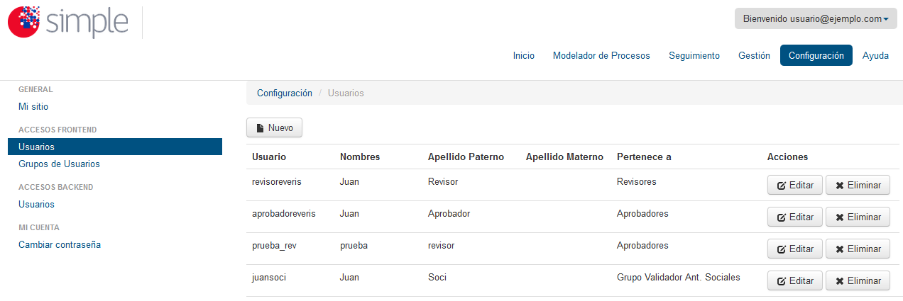
Siendo las opciones del mantenedor de Usuarios las siguientes:
- Botón Nuevo 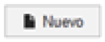:
- Permite añadir un nuevo usuario a Simple. Para esto, sólo debe hacer clic sobre el botón Nuevo y completar el formulario que se desplegará, con se ve en la imagen siguiente:
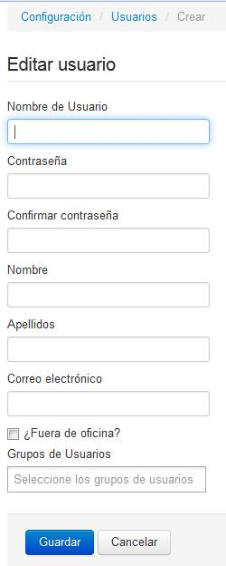
- Permite añadir un nuevo usuario a Simple. Para esto, sólo debe hacer clic sobre el botón Nuevo y completar el formulario que se desplegará, con se ve en la imagen siguiente:
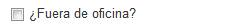
Puede checkear el ticket "¿Fuera de oficina?" para indicar que el usuario no se encuentra disponible, con esto las tareas no será asignadas a él.
Considere que un usuario puede pertenecer a más de un grupo, por lo que en el campo Grupos de Usuario, se le desplegará una lista con los grupos existentes en Simple, como se puede visualizar en la siguiente imagen:
-
- 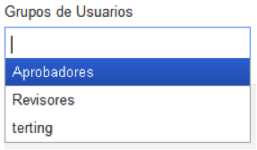
El ingreso de usuarios se puede realizar en el momento que se requiera al diseñar el modelo de proceso, pero es recomendable definirlos con anterioridad, esto permitirá que en momento del diseño del modelo de procesos, los usuarios o grupos sean asignados inmediatamente a las tareas que correspondan.
- 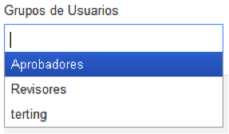
- Botón Editar 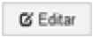:
- Permite editar los datos de un usuario en particular existente en Simple. Para esto sólo debe presionar el botón Editar, dentro de la misma fila en que se encuentre el usuario a editar, como se visualiza a continuación:
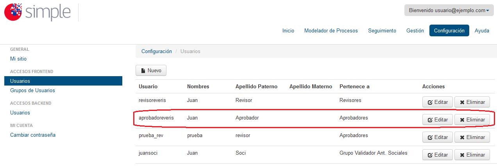
Luego completar el formulario que se abrirá, el cual contiene el mismo formulario que se ha completado al momento de añadir un nuevo usuario, sólo que en esta oportunidad los datos aparecerán precargados, para poder ser editados:
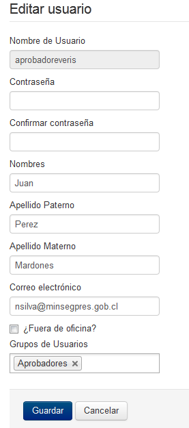
Como se puede visualizar en el formulario anterior, el campo Contraseña no tendrá información precargada, si desea cambiar la contraseña deberá modificar dicho campo, de lo contrario, lo debe dejar en blanco para mantener la contraseña actual del usuario.
- Permite editar los datos de un usuario en particular existente en Simple. Para esto sólo debe presionar el botón Editar, dentro de la misma fila en que se encuentre el usuario a editar, como se visualiza a continuación:
- Botón Eliminar 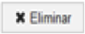:
- Permite eliminar un usuario del Sistema. Para eliminar un usuario simplemente posiciónese en la fila del usuario a eliminar y haga clic sobre el botón Eliminar. A modo de ejemplo en la imagen de a continuación se eliminará el usuario sbmsbm:
Se desplegará una imagen de confirmación previa eliminación del usuario, confirmando esto el usuario será eliminado definitivamente:
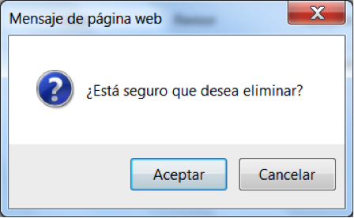
- Permite eliminar un usuario del Sistema. Para eliminar un usuario simplemente posiciónese en la fila del usuario a eliminar y haga clic sobre el botón Eliminar. A modo de ejemplo en la imagen de a continuación se eliminará el usuario sbmsbm:
USUARIO ACCESO BACKEND
Los usuarios de acceso backend corresponden a usuarios de administracion del sitio SIMPLE. La gestion y administracion de usuarios backend se realiza de la misma forma que los usuarios del Frontend. La particularidad es que pueden crearse con distintos roles los cuales permiten acceso restringido a ciertas funcionalidades, a continuación se detallan los distintos tipos de roles de usuarios backend.
- Super: Acceso a todas las funionalidades de la administración.
- Modelamiento: Solo acceso a la funcionalidad Modelador de Procesos.
- Operación: Solo acceso a la funcionalidad Seguimiento.
- Gestión: Acceso a la funcionalidad Gestión y a los Widget de la página de inicio.
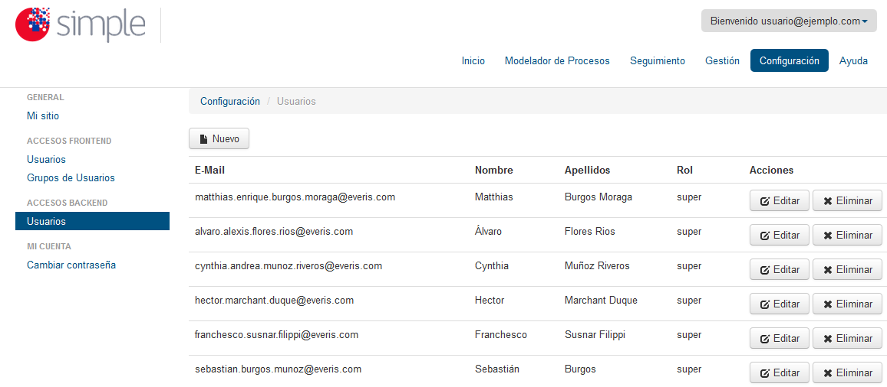